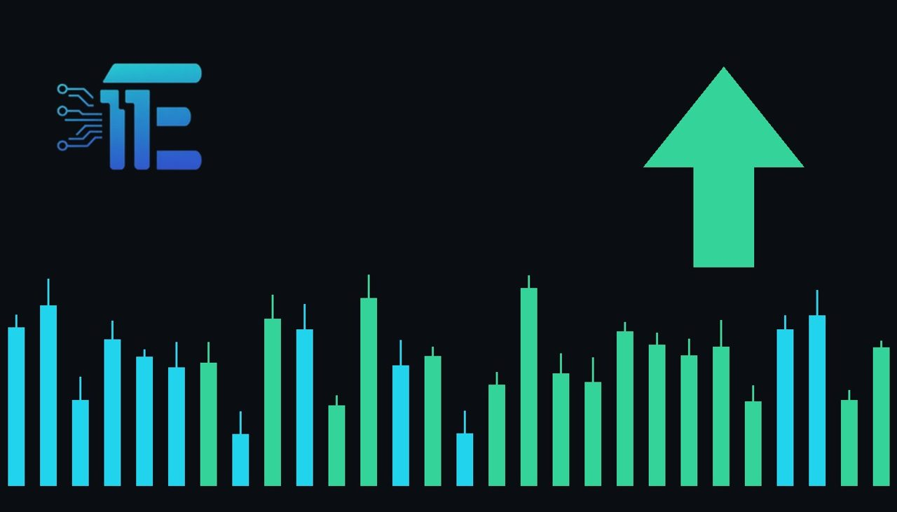

Newmont Posts Record Cash Flow as Higher Gold Prices Lift MarginsNewmont រាយការណ៍ពីចំណូលសាច់ប្រាក់កម្រិតខ្ពស់ ខណៈតម្លៃមាសជួយឱ្យប្រាក់ចំណេញកាន់តែប្រសើរ
XAU/USD impact: ▲ Bullishផលប៉ះពាល់លើ XAU/USD: ▲ ឡើង

Newmont produced $2.2 billion of free cash flow in the second quarter of 2026, driven by higher gold prices. This profitability highlight underscores the strong operational margins supporting the broader gold sector.
ក្រុមហ៊ុន Newmont បានរកប្រាក់សាច់ប្រាក់សេរីចំនួន ២.២ ប៊ីលានដុល្លារអាមេរិកក្នុងត្រីមាសទីពីរនៃឆ្នាំ ២០២૬ ដោយសារតម្លៃមាសខ្ពស់។ សមិទ្ធផលនេះបង្ហាញពីភាពរឹងមាំនៃប្រាក់ចំណេញក្នុងវិស័យមាស។
Newmont generated $2.2 billion of free cash flow in the second quarter of 2026, marking its highest free cash flow for any second quarter in the company's history. Management noted that higher gold prices fed directly through to company margins, boosting financial returns during the period. However, the report also highlighted an expense that investors should monitor closely regarding what the company spends to keep its mines running.
ក្រុមហ៊ុន Newmont បានបង្កើតចំណូលសាច់ប្រាក់សេរីចំនួន ២.២ ប៊ីលានដុល្លារអាមេរិកក្នុងត្រីមាសទីពីរនៃឆ្នាំ ២០២૬ ដែលជាកម្រិតខ្ពស់បំផុតសម្រាប់ត្រីមាសទីពីរក្នុងប្រវត្តិសាស្ត្ររបស់ក្រុមហ៊ុន។ ថ្នាក់ដឹកនាំក្រុមហ៊ុនបានបញ្ជាក់ថា តម្លៃមាសដែលខ្ពស់ជាងមុនបានជួយជំរុញដល់ប្រាក់ចំណេញរបស់ក្រុមហ៊ុនផ្ទាល់ក្នុងអំឡុងពេលនោះ។ ទោះជាយ៉ាងណាក៏ដោយ របាយការណ៍នេះក៏បានបង្ហាញផងដែរអំពីការចំណាយដែលអ្នកជួញដូរគួរតែតាមដានយ៉ាងដិតដល់ទាក់ទងនឹងការរក្សាដំណើរការរ៉ែរបស់ខ្លួន។
The transmission channel from corporate mining metrics to the broader XAU/USD market operates through investor sentiment and sector fundamental valuations. Strong cash generation among primary producers highlights healthy industry margins, which often reinforce confidence in physical gold holdings and spot values. Conversely, rising operational and maintenance costs to keep mines running can squeeze miner profitability if metal prices stall.
ទំនាក់ទំនងពីទិន្នន័យអាជីវកម្មរ៉ែទៅកាន់ទីផ្សារ XAU/USD គឺឆ្លងកាត់តាមរយៈអារម្មណ៍របស់អ្នកជួញដូរនិងតម្លៃមូលដ្ឋាននៃវិស័យនេះ។ ការរកប្រាក់សាច់ប្រាក់បានយ៉ាងច្រើនក្នុងចំណោមក្រុមហ៊ុនផលិតធំៗបង្ហាញពីសុខភាពហិរញ្ញវត្ថុដ៏ល្អក្នុងឧស្សាហកម្ម ដែលច្រើនតែពង្រឹងទំនុកចិត្តលើការកាន់កាប់មាសជាក់ស្តែង។ ផ្ទុយទៅវិញ ការចំណាយលើការដំណើរការនិងការថែទាំកើនឡើងអាចកាត់បន្ថយប្រាក់ចំណេញរបស់ក្រុមហ៊ុន ប្រសិនបើតម្លៃលោហៈមានការធ្លាក់ចុះ។
A balanced view of current market dynamics shows that sustained high profit margins and robust free cash generation typically support positive sentiment toward gold assets. On the other hand, escalating capital expenditure and rising maintenance expenses across major producers can introduce cost pressures that challenge company valuations. Traders weigh these operational updates against broader macroeconomic signals like currency shifts and Treasury yields.
ទស្សនៈមានតុល្យភាពនៃទីផ្សារបច្ចុប្បន្នបង្ហាញថា ប្រាក់ចំណេញខ្ពស់និងការរកសាច់ប្រាក់បានល្អជាទូទៅគាំទ្រដល់អារម្មណ៍វិជ្ជមានចំពោះទីផ្សារមាស។ ម្យ៉ាងវិញទៀត ការចំណាយលើទុននិងការចំណាយលើការថែទាំដែលកំពុងកើនឡើងក្នុងចំណោមក្រុមហ៊ុនផលិតធំៗអាចបង្កើតសម្ពាធចំណាយដែលប្រឈមមុខនឹងតម្លៃរបស់ក្រុមហ៊ុន។ អ្នកជួញដូរតែងតែថ្លឹងថ្លែងព័ត៌មានទាំងនេះជាមួយនឹងសញ្ញាម៉ាក្រូសេដ្ឋកិច្ចទូលំទូលាយដូចជាការប្រែប្រួលប្រាក់ដុល្លារអាមេរិកនិងអត្រាប័ណ្ណបំណុលផងដែរ។
Market participants should watch upcoming operational reports from major mining companies, changes in production guidance, and trends in capital expenditures. Additionally, tracking broader economic indicators such as US dollar movements and benchmark bond yields will remain essential for assessing overall market direction.
អ្នកចូលរួមទីផ្សារគួរតែតាមដានរបាយការណ៍ប្រតិបត្តិការនាពេលខាងមុខពីក្រុមហ៊ុនរ៉ែធំៗ ការផ្លាស់ប្តូរក្នុងការគ្រោងទុកផលិតកម្ម និងនិន្នាការនៃការចំណាយលើទុន។ លើសពីនេះ ការតាមដានសូចនាករសេដ្ឋកិច្ចទូលំទូលាយដូចជាការផ្លាស់ប្តូររបស់ដុល្លារអាមេរិក និងអត្រាការប្រាក់ប័ណ្ណបំណុលនឹងនៅតែមានសារៈសំខាន់សម្រាប់ការវាយតម្លៃទិសដៅទីផ្សារទាំងមូល។
Key takeawaysចំណុចសំខាន់ៗ
- Newmont reported $2.2 billion in free cash flow for the second quarter of 2026.
- ក្រុមហ៊ុន Newmont រាយការណ៍ប្រាក់សាច់ប្រាក់សេរីចំនួន ២.២ ប៊ីលានដុល្លារអាមេរិកក្នុងត្រីមាសទីពីរនៃឆ្នាំ ២០២૬។
- Higher gold prices directly improved company margins and financial returns.
- តម្លៃមាសខ្ពស់បានជួយកែលម្អប្រាក់ចំណេញនិងផលចំណេញរបស់ក្រុមហ៊ុនផ្ទាល់។
- Management expects mine maintenance expenses to increase in the second half of the year.
- ថ្នាក់ដឹកនាំរំពឹងថាការចំណាយលើការថែទាំរ៉ែនឹងកើនឡើងក្នុងឆមាសទីពីរនៃឆ្នាំនេះ។
Original commentary by THE MARKET CODE, based on public reporting from Yahoo! Finance: GC=F News. Written with the help of AI. Educational only, not financial advice.
មតិវិភាគដើមដោយ THE MARKET CODE ផ្អែកលើការរាយការណ៍សាធារណៈពី Yahoo! Finance: GC=F News។ សរសេរដោយមានជំនួយពី AI។ មាតិកាអប់រំប៉ុណ្ណោះ មិនមែនជាដំបូន្មានហិរញ្ញវត្ថុទេ។